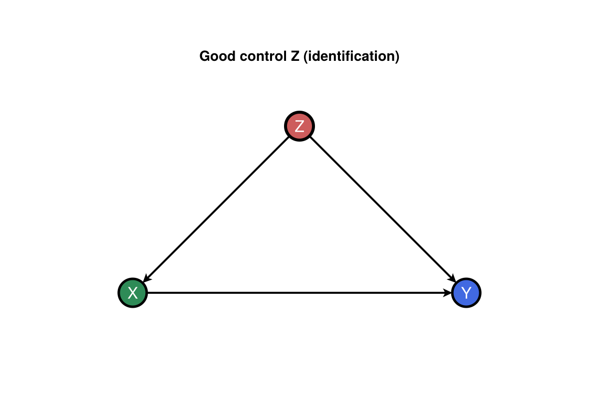
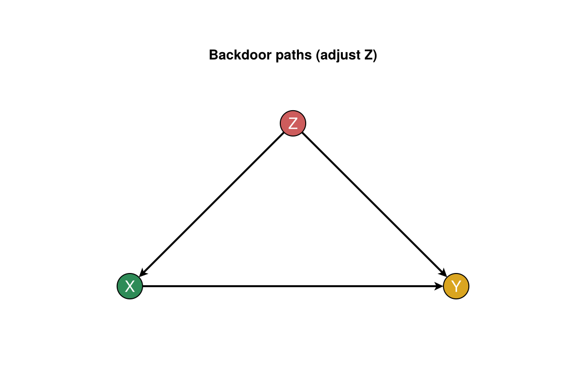
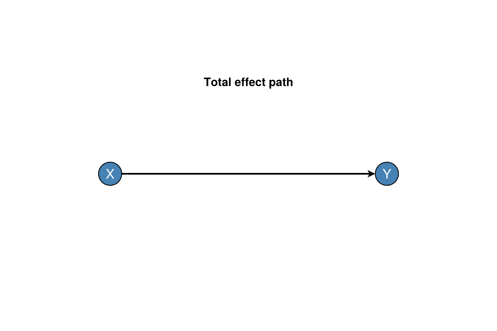
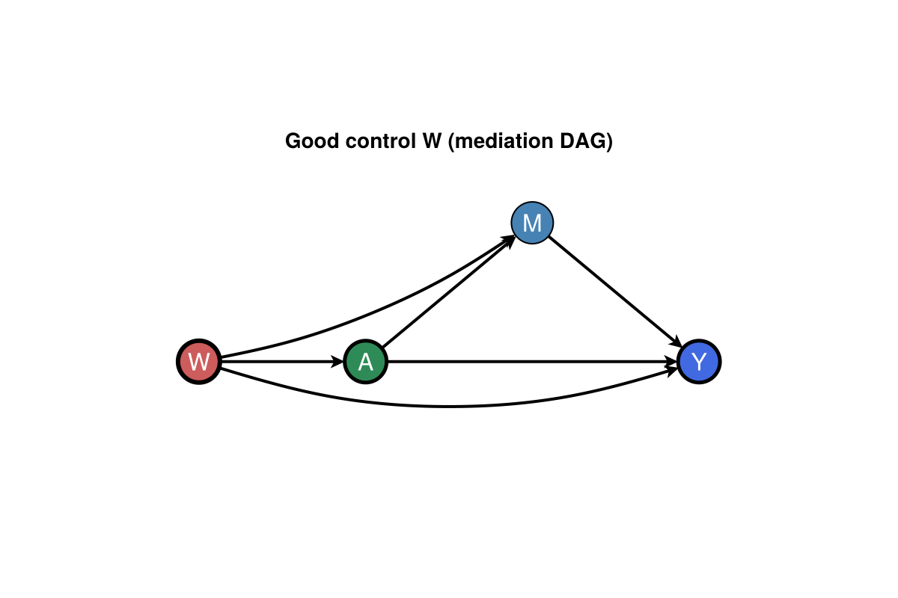
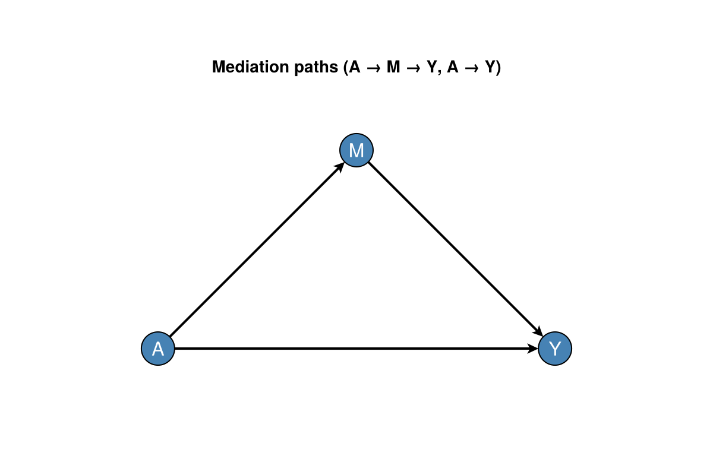
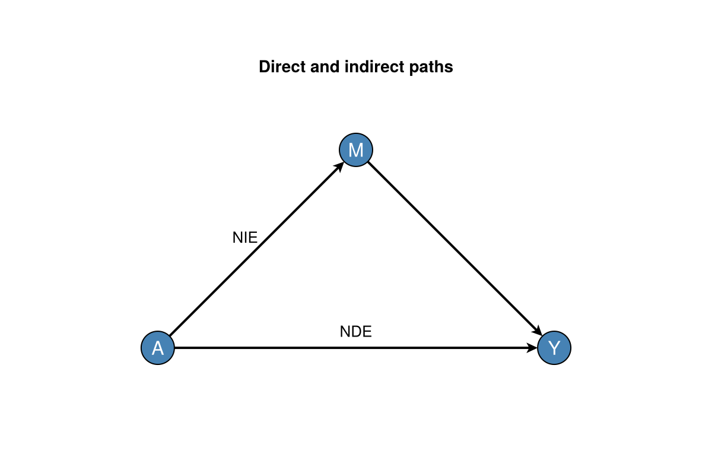
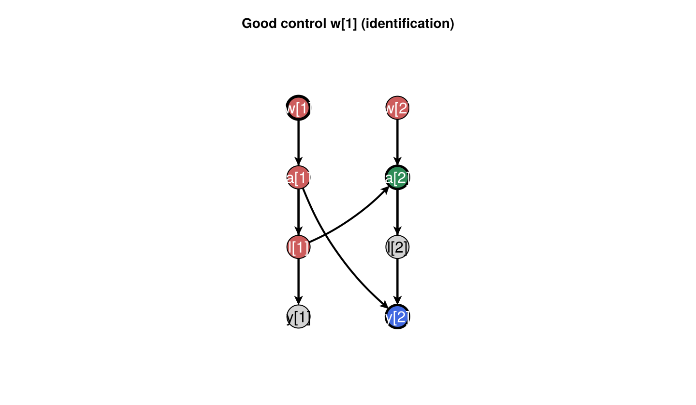
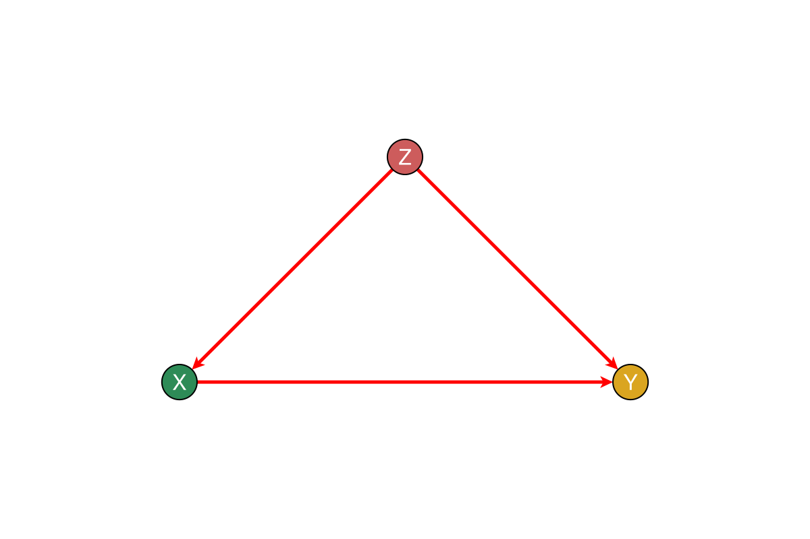

Getting started
CausalDynamics supplies graphs, d-separation, and identification certificates for structural and discrete-time models. The walk-throughs below run in Documenter with small examples you can copy into scripts or Quarto chunks.
Install from General:
using Pkg
Pkg.add("CausalDynamics")Load DAGMakie when you want figures (using DAGMakie, CairoMakie activates the plotting extension):
using CausalDynamics, Graphs, DAGMakie, CairoMakieDAG figures follow Cinelli, Forney & Pearl (2022, SMR): a good-control triangle for adjustment, then the estimand path with effects on edges where helpful. Plotting uses DAGMakie directly (dagplot_confounding, dagplot_backdoor, dagplot_chain, dagplot_mediation, dagplot_temporal, edge_routing, CurvedEdge).
1. Backdoor adjustment (good control)
Graph. Classic confounding: Z → X → Y and Z → Y.
using CausalDynamics, Graphs
g = DiGraph(3)
add_edge!(g, 1, 2) # Z → X
add_edge!(g, 1, 3) # Z → Y
add_edge!(g, 2, 3) # X → Y
names = Dict(1 => :Z, 2 => :X, 3 => :Y)
d_separated(g, 2, 3, [1]) # true once Z is conditioned
backdoor_adjustment_set(g, 2, 3)Set{Int64} with 1 element:
1Graph (identification). Good-control triangle: adjust Z (Cinelli et al. 2022).
using DAGMakie, CairoMakie
fig, _, _ = dagplot_confounding(["Z", "X", "Y"];
color_by = :adjustment,
exposure = 2,
outcome = 3,
adjustment = Set([1]),
title = "Good control Z (identification)",
)
fig
Graph (backdoor paths). Biased paths through Z blocked by adjustment.
adj = backdoor_adjustment_set(g, 2, 3)
fig, _, _ = dagplot_backdoor(g, 2, 3;
adjustment = adj,
labels = ["Z", "X", "Y"],
title = "Backdoor paths (adjust Z)",
)
fig
Typed identification. identify returns a certificate-friendly result:
id = identify(g, TotalEffectQuery(:X, :Y); node_names = names)
id.identifiable, id.strategy, id.adjustment(true, :backdoor, [:Z])Graph (total effect). Estimand path X → Y only (confounder omitted from the TE diagram).
g_te, _ = chain_graph(["X", "Y"])
fig, _, _ = dagplot_chain(["X", "Y"];
title = "Total effect path",
)
fig
Further reading: Identification API · Graph operations.
2. Mediation (triangle)
Graph. Baseline confounding plus mediator M on A → Y.
using CausalDynamics, Graphs
g = DiGraph(4)
add_edge!(g, 1, 2); add_edge!(g, 1, 3); add_edge!(g, 1, 4)
add_edge!(g, 2, 3); add_edge!(g, 2, 4); add_edge!(g, 3, 4)
names = Dict(1 => :W, 2 => :A, 3 => :M, 4 => :Y)
id = identify(
g, MediationQuery(:A, :Y, [:M]; effect_kind = :interventional);
node_names = names,
)
id.identifiable, id.strategy, id.adjustment(true, :mediation_interventional, [:W])Graph (identification). Full mediation DAG; adjust W only (M is a mediator, not a good control).
using DAGMakie, CairoMakie
g_id = DiGraph(4)
add_edge!(g_id, 1, 2); add_edge!(g_id, 1, 3); add_edge!(g_id, 1, 4)
add_edge!(g_id, 2, 3); add_edge!(g_id, 2, 4); add_edge!(g_id, 3, 4)
layout_id = [
Point2f(0.0, 0.0), Point2f(1.2, 0.0), Point2f(2.4, 1.0), Point2f(3.6, 0.0),
]
fig, _, _ = dagplot(g_id;
layout = layout_id,
labels = ["W", "A", "M", "Y"],
color_by = :adjustment,
exposure = 2,
outcome = 4,
adjustment = Set([1]),
edge_routing = Dict(
(1, 4) => CurvedEdge(bow = 0.18, side = :right),
(1, 3) => CurvedEdge(bow = 0.12),
),
title = "Good control W (mediation DAG)",
)
fig
Graph (mediation paths). Direct and indirect routes with W omitted (already adjusted).
fig, _, _ = dagplot_mediation(["A", "M", "Y"];
title = "Mediation paths (A → M → Y, A → Y)",
)
fig
Graph (effect labels). NDE on A → Y, NIE via A → M (illustrative values).
using Graphs: edges, src, dst
g_med, _ = mediation_graph(["A", "M", "Y"])
elookup = Dict((1, 3) => "NDE", (1, 2) => "NIE")
fig, _, _ = dagplot_mediation(["A", "M", "Y"];
elabels = structural_edge_labels(g_med, [
get(elookup, (src(e), dst(e)), "") for e in edges(g_med)
]),
elabels_fontsize = 13,
elabels_distance = 14,
elabels_rotation = 0,
title = "Direct and indirect paths",
)
fig
Estimation of interventional NDE/NIE under MTP shifts lives in CausalMediation.jl.
3. Time-indexed graphs
Spec. Two occasions with baseline w, treatments a, time-varying l, outcome y.
using CausalDynamics
using CausalDynamics: TemporalDAGSpec, LaggedEdge, unroll_temporal_dag, TemporalEffectQuery
spec = TemporalDAGSpec([:w, :a, :l, :y], [
LaggedEdge(:w, :a, 0),
LaggedEdge(:a, :l, 0),
LaggedEdge(:l, :a, 1),
LaggedEdge(:a, :y, 0),
LaggedEdge(:a, :y, 1),
LaggedEdge(:w, :y, 0),
])
u = unroll_temporal_dag(spec, 2)
tq = TemporalEffectQuery(:a, :y, 1, 2)
id = identify(u, tq)
id.strategy, id.adjustment(:temporal_backdoor, [:w])Graph (identification). Good control w[1] on the unrolled DAG.
using DAGMakie, CairoMakie
using CausalDynamics: temporal_node
w1 = temporal_node(u, :w, 1)
a1 = temporal_node(u, :a, 1)
l1 = temporal_node(u, :l, 1)
a2 = temporal_node(u, :a, 2)
y2 = temporal_node(u, :y, 2)
fig, _, _ = dagplot_temporal(u;
dx = 2.4,
dy = 1.7,
figure_size = (720, 420),
fit_node_size_to_labels = false,
color_by = :adjustment,
exposure = a2,
outcome = y2,
adjustment = Set([w1]),
edge_routing = Dict(
(a1, y2) => CurvedEdge(bow = 0.14, side = :right),
(l1, a2) => CurvedEdge(bow = 0.12),
),
title = "Good control w[1] (identification)",
)
fig
Sequential LMTP estimation: CausalTargeted getting started.
4. CausalDynamics plot façades
Optional helpers wrap DAGMakie when you already hold node indices from backdoor_adjustment_set:
using CausalDynamics, Graphs, DAGMakie, CairoMakie
g = DiGraph(3)
add_edge!(g, 1, 2); add_edge!(g, 1, 3); add_edge!(g, 2, 3)
plot_backdoor_paths(g, 2, 3; node_labels = ["Z", "X", "Y"])
Highlight a chosen adjustment set explicitly:
plot_with_adjustment_set(g, 2, 3, [1]; node_labels = ["Z", "X", "Y"])
Layout and styling conventions: DAGMakie user guide.
5. SCM simulation and intervention
simulate_scm evaluates each structural equation with parent values in sorted inneighbors order, followed by that node's exogenous draw U. When several parents exist, match the function argument order to ascending parent node indices (e.g. for $Z\to Y$ and $X\to Y$, use (z, x, u) -> …, not (x, z, u)).
equations = Dict{Int, Function}(
1 => (u,) -> u,
2 => (z, u) -> z + u,
3 => (z, x, u) -> 2x + z + u,
)
scm = GraphSCM(g, equations, Set{Int}())
U = Dict(1 => 1.0, 2 => 0.5, 3 => -0.3)
y_factual = simulate_scm(scm, U)
y_do = simulate_scm(apply_intervention(scm, do_intervention(2, 10.0)), U)Shared-U counterfactuals and discrete-time CDMs: SCM API · Discrete-time CDMs.